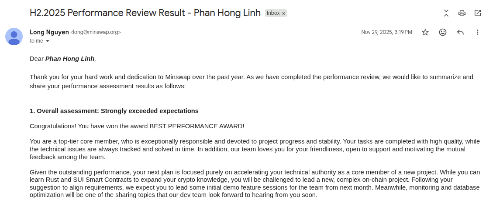
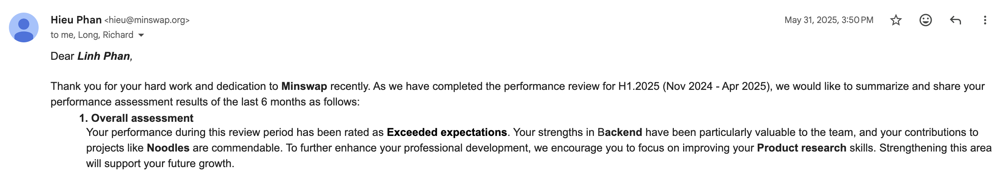
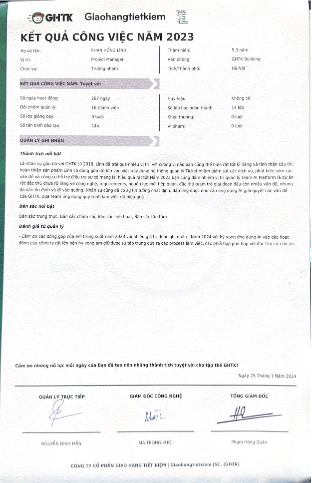
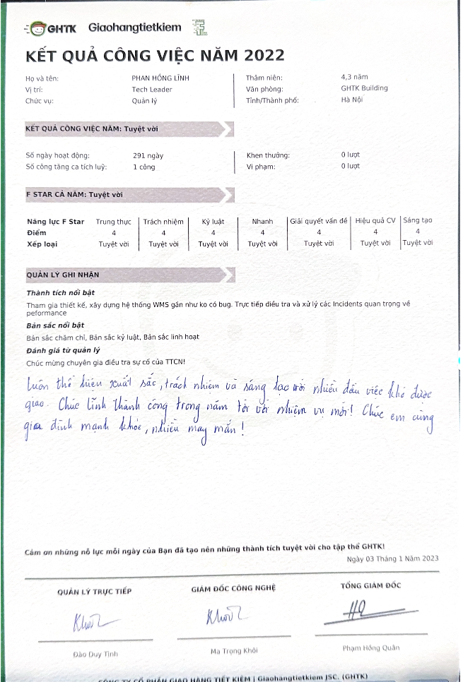
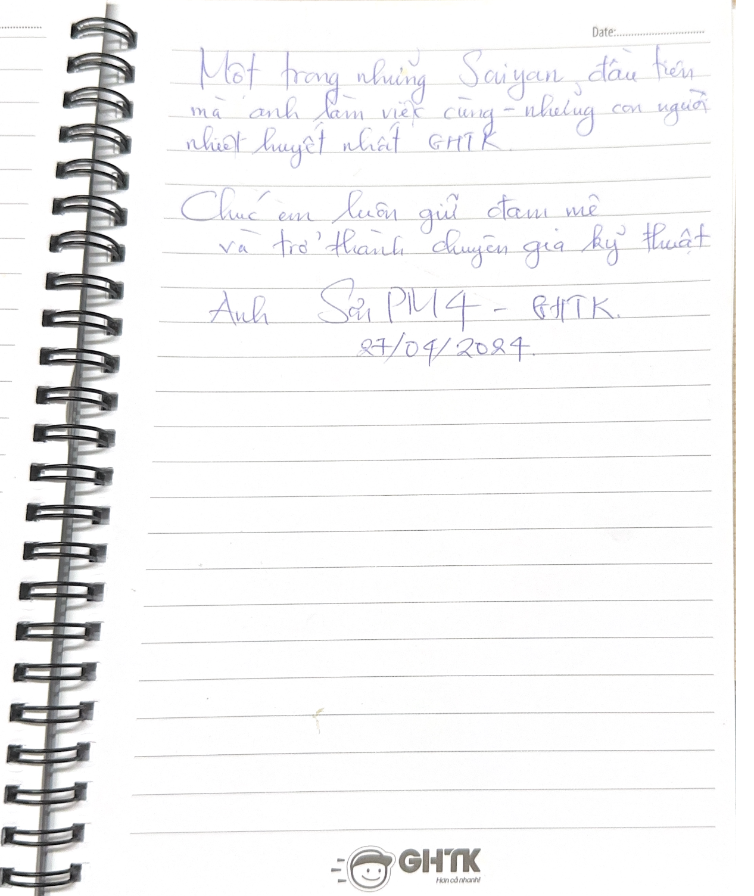
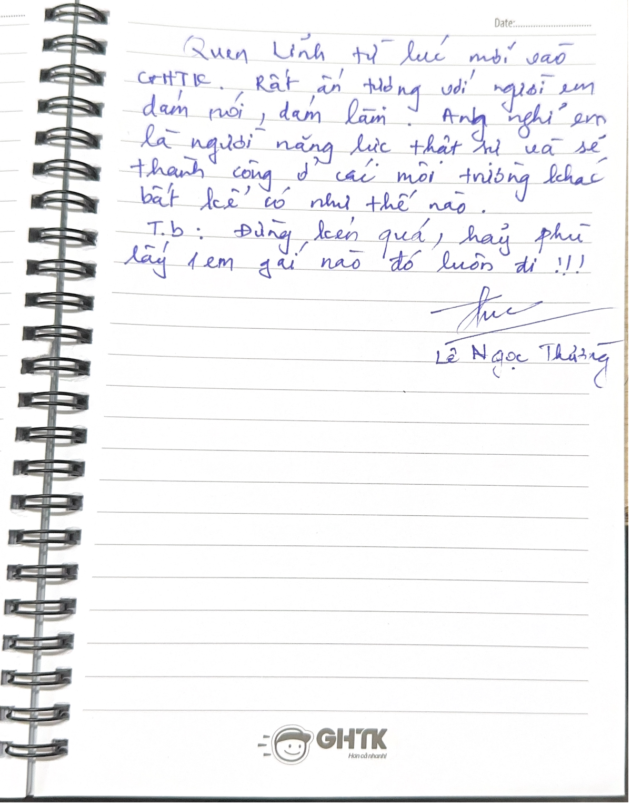

I'm Link, a Senior Software Engineer with 9+ years of experience
building large-scale, high-performance systems.
Focused on backend engineering, blockchain ecosystems, and performance
optimization. Seeking opportunities at global companies to solve challenging
technical problems and grow as a Global Software Engineer!
Acted as the performance engineer across the Minswap ecosystem: optimized slow APIs and database queries; investigated and resolved critical production performance issues.
Optimized the API & indexer: cut re-indexing time from 1 week to 6 hours; improved Minswap API v2 to deliver <100ms response times, serving 90K MAU and $1B+ in total trading volume.
Core backend engineer building the product from scratch.
Built and scaled a trading platform serving 50K MAU, 300M requests/month, and 3 TB of off-chain data with near real-time sync (<2s behind on-chain events).
Optimized performance to maintain zero slow queries (<1s) and zero slow background jobs (<10s).
Built the team and product from scratch (Backend, Frontend, AI engineers); worked directly with CEO, CTO and BA to plan and design the entire AI Platform.
Delivered an AI Platform (Labeling, H2O, Kubeflow, Jarvis API Gateway) on multi-GPU hardware, serving 10M requests/day.
Led in-house LLM adoption: self-hosted Llama & PhoGPT on multi-GPU (NVIDIA Triton, closed-source Qualcomm engine) powering an internal RAG chatbot for customer service.
Designed a real-time Performance Monitor System (slow queries, access & error logs) for all GHTK systems — 1000+ servers, 100+ databases, 700M requests/day.
Key DatabaseAdmin member optimizing and reviewing all actions across GHTK databases (20+ TB, 4000+ tables).
Ran stress tests and drove optimization: reduced peak lag of the main 20 TB MySQL database from 30 minutes to under 10 seconds.
Researched and trained new high-performance technologies; became a backend internal trainer for 200+ IT engineers(lessons still used for training today).
Built a parse-address system (text, Excel, API) and an identity-identification system validating ID-card info of newly registered shops.
FPT Software
2017
Asset Depreciation Management System
May 2017 – Dec 2017
Intern / Fresher
Developed an asset depreciation management system for Japanese businesses to support their tax declarations.
🎓 Education
Ha Noi University of Science & Technology
Aug 2014 – Dec 2018
Major: Computer Science
Graduation: Very Good
🎬 Training
Here are some videos & slides I made for training at GHTK. Due to GHTK's
policy, I can only share an internal private link with those who genuinely want to learn!
MySQL IndexingMySQL Query OptimizationReplication & Scaling
Minswap — Performance W1 ↗Postgres Optimization (Dev-mode) ↗Performance Testing & Observability ↗Pendles On Sui — Why not? ↗Pendle — Deep & Dive (Dev-mode) ↗
👨🏻💻 Reviews
🏅 Awards & Performance reviews
During my time working at both Minswap & GHTK,
I have been consistently rated "Excellent" in all performance reviews —
only the top 10% of employees receive this rating. I always
strive to complete my assigned tasks well and have received many different awards.
Beyond technical awards, I also actively join company social activities. Here are some
of the awards I received:

2025 · Best Performance Award (Minswap)

2024 · Highest performance review (Minswap)

2023 · Highest performance rating (GHTK)

2022 · Performance Result (GHTK)2022 · Best Leader of the Year (GHTK)
2020 · Promise Leader of the Year (GHTK)2018–2020 · Other awards
😍 Reviews from my colleagues
Mr. Đào Công Anh — Chief Technology Officer (GHTK)Mr. Nguyễn Đình Mẫn — Head of Department, Data Solution Architect · Top Expert (GHTK)

Mr. Phạm Minh Sơn — Head of Department, Gmap · Top Expert (GHTK)

Mr. Lê Ngọc Thường — Head of Department, Merchant Services (GHTK)Mr. Trịnh Đình Biên — Head of Department, Infrastructure · Top Expert (GHTK)Mr. Bùi Đức Tài — Head of Department, Security · Top Expert (GHTK)
🔀 References
If you want to verify my information, please contact my references below.